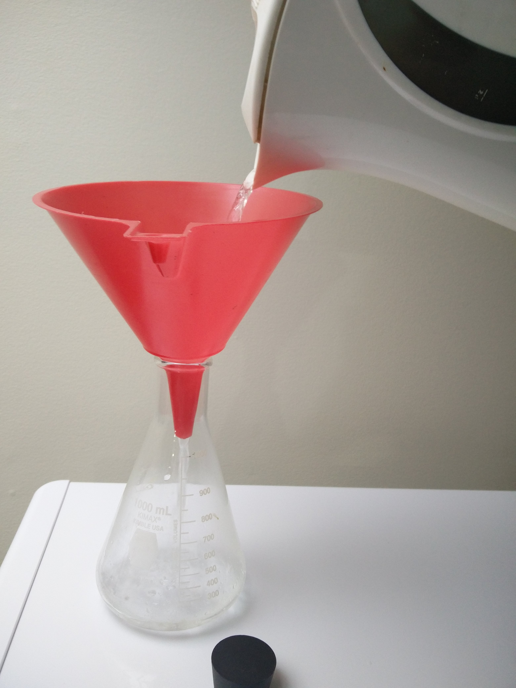
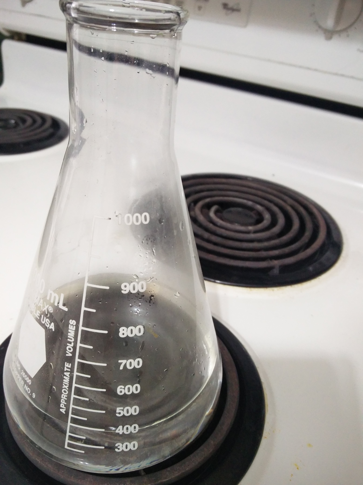
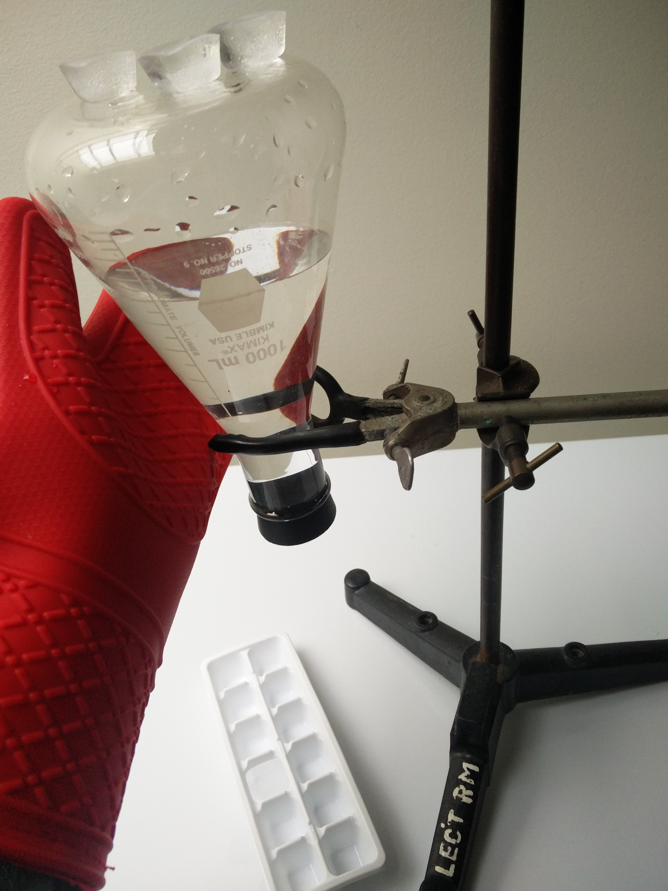

1 1L Flask
1 Stopper
1 Hot Plate
1 Kettle
1 Funnel
1 Hot Plate
400mL Water
5-10 Ice Cubes
1 Pair Oven Mitts
1 Clamp Stand
Boil water in the kettle. Pour the water into the flask using the funnel. Bring back to a boil over the hot plate. Put a stopper in the flask and wait for it to stop boiling. Tip it upside down on the clamp stand. Place ice cubes on the top of the flask and observe that the water begins boiling again.
  The stopper makes it so that no particles can enter or leave the system. As the water boils and turns to gas, the water vapour takes up more space in the flask than the liquid water until there is no room for more vapour. There are still liquid water particles that are energetic enough to be gas, but they are a little less energetic than the ones that turned into vapour before them so they have to wait until there is room for them to become a gas. When the ice is added to the top of the flask, it cools down the vapour at the top and causes it to condensate on the flask's ceiling. Now that there are less water vapour particles, there is more room for new vapour particles! The ones that were waiting their turn have room to become gas, but not all of the most energetic particles are at the top of the liquid, which is why we see the bubbles form. At high altitudes pressure is lower, so cooking is tough because the water just boils away before getting to 100 degrees Celcius. Alternatively, pressure cooking cooks food faster than a regular pot because the higher pressure allows the water to get hotter before it turns into steam.